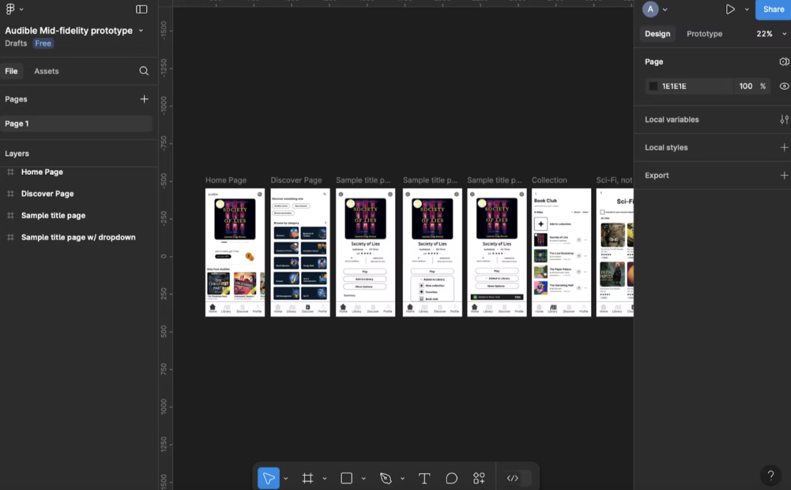
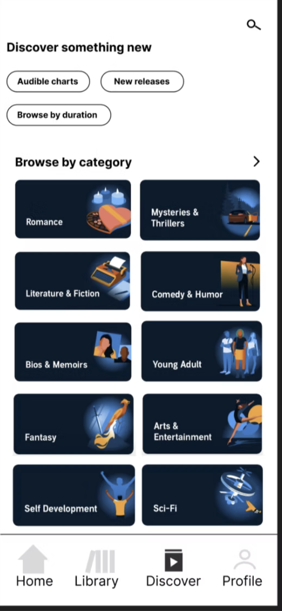
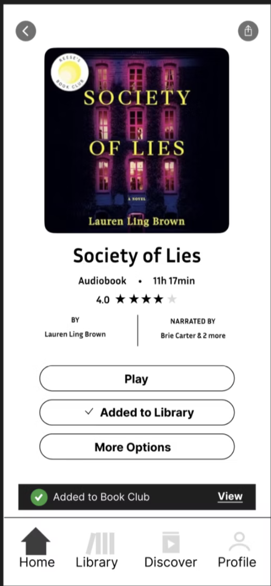

— 05
Final Design
The final prototype combined the strongest elements of Prototype 1 and Prototype 3, built in Figma using real Audible interface components for fidelity.
- Persistent included-titles filter — a checkbox filter on the Discover page that remembers its state as users navigate between genres. If you turn it on in Sci-Fi, it stays on in Romance — eliminating the need to re-apply it every session.
- Clearer visual hierarchy — included titles are surfaced more prominently within filtered results, reducing the chance users mistake paid content for included content.
- Collections dropdown on "Add to Library" — tapping the button now reveals a scrollable list of existing collections plus a "New Collection" option, with a confirmation toast at the bottom of the screen matching patterns users already know from other apps.

Building the final prototype in Figma using Audible's existing interface components to maintain visual fidelity.

The Discover page with the included-titles checkbox filter applied. The page refreshes to show only subscription-included content.

The redesigned "Add to Library" flow showing the collections dropdown and confirmation toast at the bottom of the screen.
— 06
Demo
A walkthrough of the final Figma prototype demonstrating the included-titles filter, persistent state across genres, and the redesigned collections flow.
— 07
Takeaways
This project reinforced a principle I now apply to every design problem: the most impactful UX changes are often not the most dramatic ones. Audible didn't need a visual overhaul — it needed a persistent filter and a more honest information hierarchy. Two targeted changes with significant impact on perceived value.
Running research across three methods also showed me how much each method reveals that the others miss. Survey data told me the problem was widespread. Think-aloud interviews showed me exactly where users got confused. The heuristic evaluation gave me the vocabulary to articulate why. Together they built a much stronger case for the design decisions than any single method would have.